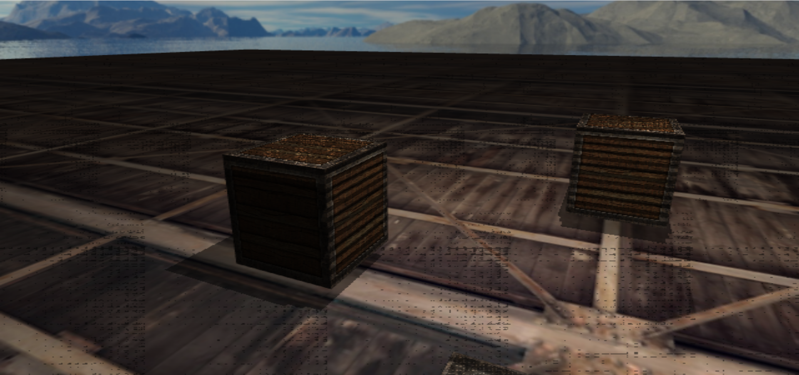
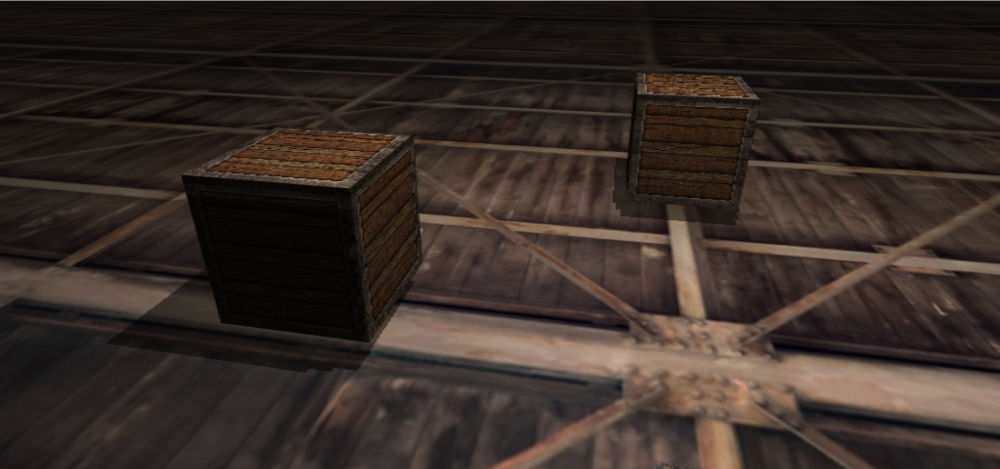
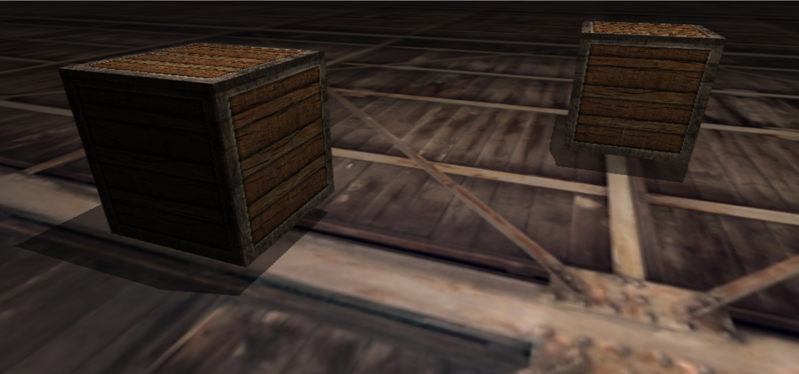

终于到阴影了。
# Shadow Mapping
阴影映射是最简单的生成阴影的方法。有以下特点：
- 是一种图象空间的做法，不需要知道场景的几何信息
- 会产生走样
- 只能对点光源做硬阴影，边缘明确
- 数值精度问题：判断是否相等会有浮点数的精度问题，可以判断是否大于或判断是否超出一定范围
- 分辨率：分辨率低会走样，分辨率高开销大
步骤：
- 从光源看向场景，生成一幅图，记录对应的深度
- 从相机看向场景，看到一个点时把它投影回光源的成像平面上得到像素位置，再和从光源看的图的这个像素相比较。如果比光源看到的深度大，说明应该有阴影。
差不多就上代码，创建帧缓冲和深度纹理，并把深度纹理附加到帧缓冲上的部分：
// 名为 WEBGL_depth_texture 的 WebGL 扩展，我们可以尝试开启该扩展，它会给我们提供深度纹理 | |
const ext = gl.getExtension("WEBGL_depth_texture"); | |
if (!ext) { | |
alert("No WEBGL_depth_texture!") | |
return; | |
} | |
// shadow | |
const depthFramebuffer = gl.createFramebuffer(); | |
gl.bindFramebuffer(gl.FRAMEBUFFER, depthFramebuffer); | |
const depthTexture = gl.createTexture(); | |
const depthTextureSize = 512; | |
gl.bindTexture(gl.TEXTURE_2D, depthTexture); | |
gl.texImage2D( | |
gl.TEXTURE_2D, // target | |
0, // mip level | |
gl.DEPTH_COMPONENT, // internal format | |
depthTextureSize, // width | |
depthTextureSize, // height | |
0, // border | |
gl.DEPTH_COMPONENT, // format | |
gl.UNSIGNED_INT, // type | |
null); // data | |
gl.texParameteri(gl.TEXTURE_2D, gl.TEXTURE_MAG_FILTER, gl.NEAREST); | |
gl.texParameteri(gl.TEXTURE_2D, gl.TEXTURE_MIN_FILTER, gl.NEAREST); | |
gl.texParameteri(gl.TEXTURE_2D, gl.TEXTURE_WRAP_S, gl.CLAMP_TO_EDGE); | |
gl.texParameteri(gl.TEXTURE_2D, gl.TEXTURE_WRAP_T, gl.CLAMP_TO_EDGE); | |
gl.framebufferTexture2D( | |
gl.FRAMEBUFFER, // target | |
gl.DEPTH_ATTACHMENT, // attachment point | |
gl.TEXTURE_2D, // texture target | |
depthTexture, // texture | |
0); // mip level | |
// 创建一个和深度纹理相同尺寸的颜色纹理 | |
const unusedTexture = gl.createTexture(); | |
gl.bindTexture(gl.TEXTURE_2D, unusedTexture); | |
gl.texImage2D( | |
gl.TEXTURE_2D, | |
0, | |
gl.RGBA, | |
depthTextureSize, | |
depthTextureSize, | |
0, | |
gl.RGBA, | |
gl.UNSIGNED_BYTE, | |
null, | |
); | |
gl.texParameteri(gl.TEXTURE_2D, gl.TEXTURE_MAG_FILTER, gl.NEAREST); | |
gl.texParameteri(gl.TEXTURE_2D, gl.TEXTURE_MIN_FILTER, gl.NEAREST); | |
gl.texParameteri(gl.TEXTURE_2D, gl.TEXTURE_WRAP_S, gl.CLAMP_TO_EDGE); | |
gl.texParameteri(gl.TEXTURE_2D, gl.TEXTURE_WRAP_T, gl.CLAMP_TO_EDGE); | |
// 把它附加到该帧缓冲上 | |
gl.framebufferTexture2D( | |
gl.FRAMEBUFFER, // target | |
gl.COLOR_ATTACHMENT0, // attachment point | |
gl.TEXTURE_2D, // texture target | |
unusedTexture, // texture | |
0); // mip level |
这里为什么用深度纹理而不是深度缓冲、深度纹理和深度缓冲有什么区别，我暂时还没研究明白……
渲染部分：
gl.clearColor(0.0, 0.0, 0.0, 1.0); // Clear to black, fully opaque | |
gl.clearDepth(1.0); // Clear everything | |
gl.enable(gl.DEPTH_TEST); // Enable depth testing | |
gl.depthFunc(gl.LEQUAL); // Near things obscure far things | |
objects.forEach(element => { | |
element.updateUniforms(camera, light, depthTexture); | |
}); | |
gl.bindFramebuffer(gl.FRAMEBUFFER, depthFramebuffer); | |
gl.viewport(0, 0, depthTextureSize, depthTextureSize); | |
gl.clear(gl.COLOR_BUFFER_BIT | gl.DEPTH_BUFFER_BIT); | |
drawObjectList(gl, objects, "Shadow"); | |
gl.bindFramebuffer(gl.FRAMEBUFFER, null); | |
gl.viewport(0, 0, gl.canvas.width, gl.canvas.height); | |
gl.clear(gl.COLOR_BUFFER_BIT | gl.DEPTH_BUFFER_BIT); | |
drawObjectList(gl, objects, ""); |
渲染部分要先在创建出来的绑定了深度纹理的帧缓冲中渲染一遍，这样深度纹理中保存的就是深度值，之后再进行一次渲染。
要注意两次渲染使用的着色器是不一样的，首先产生深度的着色器：
attribute vec3 a_vertexPosition; | |
uniform mat4 u_lightSpaceMatrix; | |
uniform mat4 u_modelMatrix; | |
void main() { | |
gl_Position = u_lightSpaceMatrix * u_modelMatrix * vec4(a_vertexPosition, 1.0); | |
} |
precision mediump float; | |
uniform vec4 u_color; | |
void main() { | |
gl_FragColor = u_color; | |
} |
采用 Blinn-Phong 方法渲染的着色器：
attribute vec3 a_vertexPosition; | |
attribute vec3 a_vertexNormal; | |
attribute vec2 a_textureCoord; | |
uniform mat4 u_projectionMatrix; | |
uniform mat4 u_viewMatrix; | |
uniform mat4 u_modelMatrix; | |
uniform mat4 u_normalMatrix; | |
uniform mat4 u_lightSpaceMatrix; | |
varying vec3 v_fragPosition; | |
varying vec3 v_fragNormal; | |
varying vec2 v_textureCoord; | |
varying vec4 v_fragPositionLightSpace; | |
void main() { | |
// Pass the texture coord to the fragment shader. | |
v_fragPosition = vec3(u_modelMatrix * vec4(a_vertexPosition, 1.0)); | |
v_fragPositionLightSpace = u_lightSpaceMatrix * u_modelMatrix * vec4(a_vertexPosition, 1.0); | |
v_fragNormal = vec3(u_normalMatrix * vec4(a_vertexNormal, 1.0)); | |
v_textureCoord = a_textureCoord; | |
// Multiply the position by the matrix. | |
gl_Position = u_projectionMatrix * u_viewMatrix * u_modelMatrix * vec4(a_vertexPosition, 1.0); | |
} |
precision mediump float; | |
struct Material { | |
sampler2D diffuse; | |
sampler2D specular; | |
float shininess; | |
}; | |
struct Light { | |
vec3 position; | |
vec3 intensity; | |
vec3 ambient; | |
vec3 diffuse; | |
vec3 specular; | |
}; | |
varying vec3 v_fragPosition; | |
varying vec4 v_fragPositionLightSpace; | |
varying vec3 v_fragNormal; | |
varying vec2 v_textureCoord; | |
uniform sampler2D u_projectedTexture; | |
uniform vec3 u_viewPosition; | |
uniform Material u_material; | |
uniform Light u_light; | |
void main() { | |
vec3 projectedTexCoord = v_fragPositionLightSpace.xyz / v_fragPositionLightSpace.w; | |
// transform to [0, 1] range | |
projectedTexCoord = projectedTexCoord * 0.5 + 0.5; | |
float closestDepth = texture2D(u_projectedTexture, projectedTexCoord.xy).r; | |
float currentDepth = projectedTexCoord.z; | |
float projectedAmount = currentDepth > (closestDepth + 0.001) ? 0.5 : 0.0; | |
vec4 shadowColor = vec4(vec3(0), 1.0); | |
// Blinn-Phong | |
vec3 texDiffuse = texture2D(u_material.diffuse, v_textureCoord).rgb; | |
vec3 texSpecular = texture2D(u_material.specular, v_textureCoord).rgb; | |
vec3 norm = normalize(v_fragNormal); | |
vec3 lightDir = normalize(u_light.position - v_fragPosition); | |
vec3 viewDir = normalize(u_viewPosition - v_fragPosition); | |
vec3 temp = u_light.position - v_fragPosition; | |
float radius2 = dot(temp, temp); // equals to pow(sqrt(temp, temp), 2) | |
// ambient | |
vec3 ambient = u_light.ambient * texDiffuse; | |
// diffuse | |
float diff = max(dot(norm, lightDir), 0.0); | |
vec3 diffuse = (u_light.intensity / radius2) * u_light.diffuse * diff * texDiffuse; | |
// specular | |
vec3 halfDir = normalize(viewDir + lightDir); | |
float spec = pow(max(dot(norm, halfDir), 0.0), u_material.shininess); | |
vec3 specular = (u_light.intensity / radius2) * u_light.specular * spec * texSpecular; | |
vec3 result = ambient + diffuse + specular; | |
vec4 shadingColor = vec4(result, 1.0); | |
gl_FragColor = mix(shadingColor, shadowColor, projectedAmount); | |
} |
float projectedAmount = currentDepth > (closestDepth + 0.001) ? 0.5 : 0.0; 这里比较的是深度比保存的深度还大一部分，否则成像时会因为浮点数的比较而产生奇怪的效果：

不是阴影的部分会因为比较的问题被归为阴影。
最终结果：

深度纹理的大小是 512*512，可以看到阴影边缘确实有走样现象。
为了改善走样，如果把深度纹理大小改为 4096，效果会变成这样：

边缘的锯齿几乎不见了，但是也产生了明显的卡顿，开销明显加大了。
阴影映射只能产生点光源的硬阴影，可以使用 PCSS 或者 SDF 来产生软阴影…… 之后看情况去学。